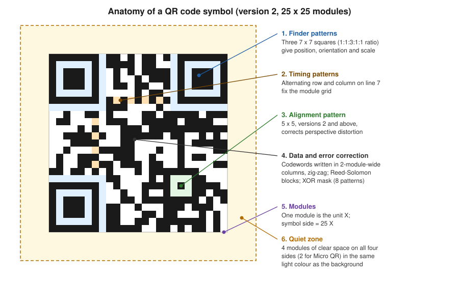

Barcodes & QR Codes: Fundamentals
|
This content was generated with the assistance of AI and should be verified against the official documentation before being relied on in production. |
A barcode is a machine-readable picture of a short piece of data, and a PDF is a page description that can draw that picture either as a grid of vector rectangles or as a bitmap. Almost every problem seen with barcodes on invoices, labels and tickets comes from a handful of physical facts: the symbology chosen, how much data is stored, how much redundancy is added, how big one black-or-white cell is on paper, and whether there is enough clear space around the symbol. This page explains those facts once, so that the library-specific pages can concentrate on code. The Bookshelf Billing service of this section prints an invoice number as a linear barcode on delivery notes and a QR code on each invoice, and every decision below is explained with those two uses in mind. Versions are stated as of 2026-10-09: ZXing 3.5.4, iText Core 9.8.0, Okapi Barcode 0.5.6 and Java 21.
The page is the foundation of four more. Barcodes with iText, ZXing & Okapi shows how to draw the symbols in a PDF, Barcodes in JasperReports does the same in report templates, and Regulated QR Codes on Invoices & Payments covers the codes that a tax authority or a bank prescribes. How a drawing ends up in the file is explained in How a PDF File Works, and the low-level drawing operators used in the vector example below are described in Low-level Canvas & Graphics.
Linear and two-dimensional symbologies
A symbology is the rule set that turns data into a pattern: which characters are allowed, how each is drawn, how the start and end are marked and how a reader can check that it read the pattern correctly. Symbologies fall into two families.
Linear (one-dimensional) barcodes encode data in the widths of parallel bars and spaces. A reader sweeps a line across them, either with a laser or with a camera that looks at one row of pixels, which is why a linear barcode has to be printed with its bars perpendicular to the scan direction and why a small scratch across the bars (not along them) can ruin a read. The symbologies a Java developer meets most often are these.
-
Code 128 encodes the full ASCII range. Three subsets exist: subset A (upper case and control characters), subset B (upper and lower case) and subset C (pairs of digits, which halves the width of a numeric string). A good encoder switches subsets automatically, and the symbol ends with a modulo-103 check character that is part of the pattern. It is the default choice for invoice numbers, order numbers and any alphanumeric identifier, and it is the basis of GS1-128 (see below).
-
Code 39 encodes upper case letters, digits and a few punctuation marks, with each character drawn as nine elements. It is wide and has no mandatory check digit, but it is simple, old and still common in industrial and automotive labels. Prefer Code 128 for new work unless a partner requires Code 39.
-
EAN-13, EAN-8, UPC-A and UPC-E identify retail trade items. They are numeric only, have a fixed length and a mandatory check digit, and they are defined by GS1 so that every till in the world reads them. EAN-13 carries a GTIN-13 (a 13-digit Global Trade Item Number), UPC-A a GTIN-12. Bookshelf books are the textbook case: the ISBN-13 of a printed book is an EAN-13 that begins with 978 or 979.
-
ITF (Interleaved 2 of 5) encodes an even number of digits and is the symbology of the ITF-14 carton label, which carries a GTIN-14 and is surrounded by thick bearer bars so that printing pressure on corrugated board does not distort the bars.
Two-dimensional (matrix or stacked) codes use both directions, so they hold much more data in a small area, they can be read by a camera from any rotation and they carry real error correction.
-
QR code (ISO/IEC 18004) is the most widely deployed matrix code, readable by every smartphone camera. It is the subject of most of this page.
-
DataMatrix (ISO/IEC 16022, version ECC 200) is a square or rectangular matrix with an L-shaped finder on two sides and an alternating pattern on the other two. It is very compact and is preferred for small parts, pharmaceutical packaging and anything printed with a dot-peen or laser marker, where the area is tiny.
-
PDF417 (ISO/IEC 15438) is a stacked code, a pile of linear rows that are read together. It stores a few kilobytes and is used in boarding passes, driving licences and some invoice formats.
-
Aztec (ISO/IEC 24778) has a bull’s-eye finder in the middle, needs no quiet zone and is used for rail and airline tickets, because it survives being displayed on a low-resolution screen.
The choice follows from the reader and the data. A scanner at a till that only reads linear codes forces EAN or Code 128. A person pointing a phone at a printed page expects a QR code. A label of a few millimetres wants a DataMatrix. A regulation can also decide for you: the invoice QR codes discussed in Regulated QR Codes on Invoices & Payments must be QR codes of a given size and error-correction level, whatever the layout designer prefers.
As a concrete linear example, the check digit that the last position of an EAN-13 carries is easy to compute and a common source of invalid test data. Digits in odd positions (counting from the left, starting at one) have weight 1, digits in even positions weight 3, and the check digit is whatever brings the weighted sum up to a multiple of ten. The same modulo-10 rule is used by every GTIN length.
package demo;
public final class Ean13 {
private Ean13() {
}
/** Check digit for the first 12 digits of an EAN-13 (the GS1 modulo-10 rule). */
public static int checkDigit(String first12) {
if (!first12.matches("\\d{12}")) {
throw new IllegalArgumentException("Exactly 12 digits expected");
}
int sum = 0;
for (int i = 0; i < 12; i++) {
int digit = first12.charAt(i) - '0';
sum += (i % 2 == 0) ? digit : 3 * digit;
}
return (10 - sum % 10) % 10;
}
public static void main(String[] args) {
// 400638133393 is the prefix of a GS1 example number; the full number is printed below
System.out.println("400638133393" + checkDigit("400638133393"));
}
}The example needs only the JDK. It was compiled with --release 21 and run, and it prints 4006381333931, which is
the example GTIN used throughout the GS1 documentation. The rule it implements is specified in the GS1 General
Specifications, GS1 General Specifications.
Anatomy of a QR code
A QR code is a square grid of dark and light modules. A module is the smallest unit of the symbol: one cell,
printed either dark or light. A QR symbol always has an odd number of modules per side, and that number depends on the
version. Versions run from 1 to 40; version 1 is 21 by 21 modules and every further version adds four modules per
side, so the side in modules is 4 * version + 17, up to 177 by 177 modules for version 40. Besides the 40
versions of the full symbol, ISO/IEC 18004 defines Micro QR (versions M1 to M4, one finder pattern only) and, in its
newer editions, rectangular Micro QR (rMQR); the examples on this page produce only the full symbol, so the small
variants are not covered further.
The figure shows a version 2 symbol, 25 by 25 modules, with the fixed structures that every reader looks for before it tries to decode a single data bit. The data area of the drawing is a schematic filling, not the pattern of any real message.

-
The three finder patterns are the 7 by 7 squares in three corners. Their dark-light-dark-light-dark sequence has the ratio 1:1:3:1:1 along any line through the centre, a ratio that is found nowhere else in the symbol, so a reader can locate the code in a camera frame, tell how it is rotated (the missing fourth corner gives the orientation) and estimate the module size. A one-module light separator surrounds each finder pattern.
-
The timing patterns are alternating dark and light modules in the seventh row and seventh column. They let the reader count modules accurately across a symbol that is slightly curved or printed at a slight angle.
-
Alignment patterns (a 5 by 5 target, more of them as the version grows) appear from version 2 onwards and correct the geometry of larger symbols that are photographed with perspective distortion.
-
Format information (next to the finder patterns, stored twice) records the error-correction level and the mask number, and from version 7 a block of version information records the version. Both are protected by their own error-correcting code.
-
The remaining modules carry the data and error-correction codewords, written in a zig-zag of two-module-wide columns. The codewords are grouped in blocks, and the error-correcting code (Reed-Solomon) is computed per block. Finally one of eight mask patterns is XOR-ed over the data area; the encoder tries all eight and keeps the one with the lowest penalty score, that is the one that avoids large blank regions and accidental finder-like patterns.
-
The quiet zone is the clear margin around the symbol. The standard requires four modules on every side for the full symbol (two for Micro QR), in the light colour of the background. It is not part of the module matrix but it is part of the symbol: the reader needs it to separate the code from whatever else is printed nearby.
Encoding modes and capacity
Before the bits are written, the encoder splits the message into segments and picks the most compact encoding mode for each.
-
Numeric mode packs three digits into 10 bits (about 3.3 bits per digit).
-
Alphanumeric mode accepts the 45 characters 0 to 9, upper case A to Z, space and the symbols dollar, percent, asterisk, plus, minus, full stop, slash and colon, and packs two characters into 11 bits. A URL in lower case therefore does not qualify, which is why long URLs are sometimes upper-cased in link-shortener and ticketing systems.
-
Byte mode stores 8 bits per character. For text, the interpretation of those bytes is given by an ECI (Extended Channel Interpretation) segment or, by convention, by assuming ISO-8859-1 or UTF-8; modern readers detect UTF-8, but older ones assume ISO-8859-1, so non-ASCII text in a code that must be read by unknown devices is a risk worth testing.
-
Kanji mode packs a Shift JIS double-byte character into 13 bits.
Further segment types exist for ECI designators, for splitting a message over several symbols (structured append) and for the FNC1 marker that makes a QR code a GS1 QR code. The encoder may mix segments, and the capacity of a symbol is a function of its version, its error-correction level and the mode used.
Error-correction levels L, M, Q and H
QR codes can be decoded even if part of the symbol is dirty, scratched or covered, because every symbol contains Reed-Solomon codewords. The writer chooses one of four levels, and each trades capacity for robustness.
| Level | Recovers about | Typical use |
|---|---|---|
L (low) |
7 % of the codewords |
Clean, digital display; maximum data per symbol |
M (medium) |
15 % of the codewords |
The usual default; printed invoices and documents |
Q (quartile) |
25 % of the codewords |
Printing on rough surfaces, small risk of damage |
H (high) |
30 % of the codewords |
Dirty industrial labels, symbols with a logo placed in the middle |
The percentages are the share of codewords (8-bit units) that can be wrong, not of the surface that can be covered, and they hold only when the damage does not destroy the finder patterns. A higher level at the same data size forces a higher version, hence a symbol with more modules, hence smaller modules at a given printed size, which can make the code harder to read than a lower level at a lower version. The practical rule is to choose the lowest level that survives the real environment and then enlarge the symbol, not to choose H by reflex.
A logo in the middle of a QR code works only because the error correction is used up by the logo. It needs level Q or H, the logo should cover well under a tenth of the surface, it must never touch a finder or alignment pattern, and the result has to be tested on real devices. A regulation may forbid it, as the invoice codes discussed in Regulated QR Codes on Invoices & Payments often do.
Capacity by version
The largest symbol, version 40 with 177 by 177 modules, holds the following amounts at the extreme levels (figures from ISO/IEC 18004 as reproduced in the QR code reference tables of the standard and checked against ZXing, see the program below).
| Version 40 | Numeric | Alphanumeric | Byte | Kanji |
|---|---|---|---|---|
Level L |
7,089 |
4,296 |
2,953 |
1,817 |
Level H |
3,057 |
1,852 |
1,273 |
784 |
The program below reports which version and mask ZXing picks for a payload at each level, and it checks the numeric
limits of version 40. The Encoder class is the public encoder of the ZXing core artifact, the one that
QRCodeWriter calls internally; using it directly exposes the chosen QRCode (version, mode, mask and the module
matrix) instead of only a bitmap.
<dependency>
<groupId>com.google.zxing</groupId>
<artifactId>core</artifactId>
<version>3.5.4</version>
</dependency>package demo;
import com.google.zxing.EncodeHintType;
import com.google.zxing.WriterException;
import com.google.zxing.qrcode.decoder.ErrorCorrectionLevel;
import com.google.zxing.qrcode.encoder.Encoder;
import com.google.zxing.qrcode.encoder.QRCode;
import java.util.Map;
public class QrInspector {
public static void main(String[] args) throws WriterException {
String payload = "https://example.org/invoice/validate?series=BB&number=2026-0001&total=24.90";
for (ErrorCorrectionLevel level : ErrorCorrectionLevel.values()) {
QRCode code = Encoder.encode(payload, level, Map.of(EncodeHintType.CHARACTER_SET, "UTF-8"));
int modules = code.getMatrix().getWidth();
System.out.printf("%s: version %d, %dx%d modules, mode %s, mask %d%n",
level, code.getVersion().getVersionNumber(), modules, modules,
code.getMode(), code.getMaskPattern());
}
System.out.println("numeric 7089 digits at L: version "
+ Encoder.encode("1".repeat(7089), ErrorCorrectionLevel.L).getVersion().getVersionNumber());
System.out.println("numeric 5596 digits at M: version "
+ Encoder.encode("1".repeat(5596), ErrorCorrectionLevel.M).getVersion().getVersionNumber());
}
}The program was compiled for Java 21 and run against ZXing 3.5.4. The payload, a 75-character URL of the fictitious domain example.org, came out as follows.
| Level | Version | Modules | Mode |
|---|---|---|---|
L |
4 |
33 x 33 |
Byte |
M |
5 |
37 x 37 |
Byte |
Q |
7 |
45 x 45 |
Byte |
H |
8 |
49 x 49 |
Byte |
The two lines for 7,089 digits at level L and 5,596 digits at level M both reported version 40, the maximum, which
confirms the numeric capacities in the table above (one digit more and the encoder would throw a WriterException).
The table shows the trade-off in numbers: the same URL grows from 33 to 49 modules per side when the level goes from L
to H, so at a fixed printed width every module of the H symbol is about two thirds the size of a module of the L
symbol. The mask number is chosen by the penalty rule and can differ between levels. The method signatures are in the
ZXing API documentation, ZXing API docs, and the standard that defines the
structure is ISO/IEC 18004 (the ISO site returns an error to command line
tools, open it in a browser).
Quiet zone, module size and print resolution
Three physical quantities decide whether a printed code is read.
The module size (called the X-dimension for linear codes, the width of the narrowest bar) is the size of one module on paper. Everything else scales with it: a version 5 code at 0.5 mm per module is 37 modules times 0.5 mm, that is 18.5 mm, plus the quiet zone. Guidance for linear retail codes comes from the GS1 General Specifications, which give a nominal X-dimension of 0.33 mm for an EAN-13 and allow magnifications between 80 % and 200 % of the nominal size (check the current edition of the specification for the exact table, because it differs by symbology and by scanning environment). For QR codes there is no universal minimum, since it depends on the scanner. A widely used rule of thumb for printed codes read with a phone is 0.4 to 0.5 mm per module or more, and the density a printer produces must make the module an integer number of printer dots, otherwise the module edges are blurred by anti-aliasing. These are rules of thumb from practice, not requirements of the standard.
The print resolution sets the grid on which the module has to sit. At 300 dpi a printer dot is 25.4 / 300 = 0.0847 mm, so a module of four dots is 0.34 mm and one of six dots 0.51 mm. At 600 dpi the dot is 0.0423 mm, so a module of 0.5 mm is 11.8 dots and is rounded unevenly by the printer driver, while 0.42 mm (10 dots) is exact. A thermal label printer at 203 dpi has a dot of 0.125 mm, so a module of 0.5 mm is exactly four dots. A PDF is resolution independent, so the rule applies to the printer that finally rasterises it, not to the PDF; choosing a module size that is a multiple of the target dot pitch keeps the result sharp on that printer, and a display or a mobile viewer will scale it anyway.
The quiet zone is clear space around the symbol, and the required width differs by symbology. A QR code needs four modules on every side. Code 128 needs a margin of 10 times the X-dimension on both left and right, EAN-13 needs 11 on the left and 7 on the right (the human-readable digits are printed in that space, which is why the left digit of an EAN-13 sits outside the bars), and DataMatrix needs one module. The quiet zone has to be light and free of print: a coloured band, a table border or text touching the symbol destroys the contrast the reader relies on. This is the most common reason that a code looks fine on screen but fails on paper. A QR code placed inside a table cell needs a cell padding of at least four modules, and a code drawn with a "margin" hint of zero must be placed on a white rectangle that is larger than the symbol.
Contrast matters as much: dark modules on a light background, with a ratio large enough to be read by infrared and red-light scanners, which see red as white; avoid red or yellow bars. Inverted codes (light modules on a dark background) are read by many but not all readers, so a printed document should keep the conventional polarity.
Vector and raster codes in a PDF
A barcode can reach the page in two ways, and the choice matters more in a PDF than on a web page.
A raster barcode is a bitmap, a PNG, drawn as an image. It has a fixed number of pixels, so when it is scaled the viewer or the printer has to resample it. If the bitmap is scaled by a non-integer factor, module edges blur and a code that was readable at one size becomes marginal at another. Rasters are acceptable only when the target resolution is known and the bitmap is created at an integer multiple of it, with image smoothing switched off.
A vector barcode is drawn with fill operators: each dark module (or each bar) is a rectangle, and adjacent modules are merged into one path. The viewer or the printer renders the geometry at its native resolution, the edges are as sharp as the device allows, the file is small (a version 3 symbol is a few hundred bytes of content stream) and the code can be enlarged without losing quality. The quiet zone is simply a white rectangle behind the symbol or empty space. Vector is the right default for a PDF that will be printed or archived. Its only disadvantage is that a code made of hundreds of rectangles is a larger drawing than a single image object, which is negligible on an invoice.
The following example draws a QR code as vector rectangles with iText Core. The module matrix comes from ZXing with its own margin disabled, so that the quiet zone is drawn explicitly and its size is visible in the code: four modules, and a module size of exactly 0.5 mm. All dark modules are added to one path and filled once.
<dependency>
<groupId>com.google.zxing</groupId>
<artifactId>core</artifactId>
<version>3.5.4</version>
</dependency>
<dependency>
<groupId>com.itextpdf</groupId>
<artifactId>itext-core</artifactId>
<version>9.8.0</version>
<type>pom</type>
</dependency>iText is released under the AGPLv3 or a commercial licence, and Bookshelf Billing only uses it here to draw rectangles. Whether that licence is acceptable for a closed-source service is a decision for your own legal review; the licence choice and its consequences are explained in Introduction & Approaches. ZXing is Apache-2.0.
package demo;
import com.google.zxing.BarcodeFormat;
import com.google.zxing.EncodeHintType;
import com.google.zxing.WriterException;
import com.google.zxing.common.BitMatrix;
import com.google.zxing.qrcode.QRCodeWriter;
import com.google.zxing.qrcode.decoder.ErrorCorrectionLevel;
import com.itextpdf.kernel.colors.ColorConstants;
import com.itextpdf.kernel.geom.PageSize;
import com.itextpdf.kernel.pdf.PdfDocument;
import com.itextpdf.kernel.pdf.PdfWriter;
import com.itextpdf.kernel.pdf.canvas.PdfCanvas;
import java.io.IOException;
import java.util.Map;
public class VectorQr {
private static final float MM = 72f / 25.4f; // PDF user space units are 1/72 inch
public static void main(String[] args) throws IOException, WriterException {
// margin 0: the quiet zone is added explicitly below so that it is visible in the code
BitMatrix matrix = new QRCodeWriter().encode(
"https://example.org/invoice/BB-2026-0001", BarcodeFormat.QR_CODE, 0, 0,
Map.of(EncodeHintType.ERROR_CORRECTION, ErrorCorrectionLevel.M,
EncodeHintType.MARGIN, 0));
int modules = matrix.getWidth();
float moduleSize = 0.5f * MM; // 0.5 mm per module
float quiet = 4 * moduleSize; // four modules of quiet zone on each side
float side = modules * moduleSize + 2 * quiet;
float x0 = 40, y0 = PageSize.A4.getHeight() - 40 - side;
try (PdfDocument pdf = new PdfDocument(new PdfWriter("vector-qr.pdf"))) {
PdfCanvas canvas = new PdfCanvas(pdf.addNewPage(PageSize.A4));
canvas.setFillColor(ColorConstants.WHITE).rectangle(x0, y0, side, side).fill();
canvas.setFillColor(ColorConstants.BLACK);
for (int row = 0; row < modules; row++) {
for (int col = 0; col < modules; col++) {
if (matrix.get(col, row)) {
float x = x0 + quiet + col * moduleSize;
float y = y0 + quiet + (modules - 1 - row) * moduleSize;
canvas.rectangle(x, y, moduleSize, moduleSize);
}
}
}
canvas.fill(); // one fill for all dark modules
}
System.out.printf(java.util.Locale.ROOT, "%d modules, symbol %.1f mm square including quiet zone%n",
modules, side / MM);
}
}The example compiled for Java 21 against ZXing 3.5.4 and iText Core 9.8.0 and was run; it wrote a one-page A4 PDF
and printed 29 modules, symbol 18.5 mm square including quiet zone (a 40-character payload at level M is a version
3 symbol). The PDF was not scanned with a reader in this verification, so the pattern was checked only by the module
count and the symbol size. In the PDF, the y coordinate grows upwards, which is why the row index is flipped; the
transformation matrix and the other drawing operators are explained in
Low-level Canvas & Graphics. The derivation of the drawing is
documented by the iText knowledge base, How to generate a 2D barcode as a vector image,
and the PdfCanvas API is at PdfCanvas. The ready-made
iText classes that do the same, including BarcodeQRCode, are used in
Barcodes with iText, ZXing & Okapi.
Two more notes on PDFs. A barcode drawn in the content stream is invisible to assistive technology, so a code that carries information a person needs should have an alternative text or be tagged as an artifact with its data repeated as text next to it; tagging is covered in PDF/A & PDF/UA with iText. And a PDF that is printed through a driver that converts everything to bitmaps at a low resolution (some virtual printers and fax gateways) turns even a vector code into a raster one, so a code that must survive such a path needs a module size that is large relative to that resolution.
GS1 identifiers and symbologies
GS1 is the standards body behind retail and logistics identification. Its General Specifications define how data structures are encoded in barcodes, and several of its choices recur in every business application.
-
A GTIN (Global Trade Item Number, 8, 12, 13 or 14 digits) identifies a product. The same number is carried by an EAN/UPC retail symbol, an ITF-14 carton label, a GS1-128, a GS1 DataMatrix or a GS1 QR code.
-
An Application Identifier (AI) is a short numeric prefix that says what the following data means: for example AI 01 is a GTIN, AI 10 a batch or lot number, AI 17 an expiry date (YYMMDD) and AI 21 a serial number. The human-readable form puts the AI in parentheses,
(01)04006381333931(10)BB2026(the parentheses are never encoded in the symbol). -
GS1-128 is Code 128 with a leading FNC1 character that tells the reader that what follows is AI-structured. A variable-length element is ended with another FNC1 (a Group Separator when the data are passed on as text) so that the reader can find where it ends. It is the standard symbology of logistic labels (SSCC pallet labels).
-
GS1 DataMatrix is a DataMatrix with FNC1 in the first position. It is used for healthcare items, where a GTIN, lot, expiry and serial number must fit on a very small package; the same scheme exists for QR codes (GS1 QR code).
-
GS1 Digital Link is a different idea: instead of a bare AI string it defines a web URI that embeds the same identifiers, for example
https://id.gs1.org/01/04006381333931/10/BB2026, so that one QR code can serve a phone (a web page) and a point-of-sale scanner (the GTIN). It is the vehicle for the retail move from linear EAN codes to 2D codes known as Sunrise 2027, described in the GS1 guideline on 2D codes in retail.
The GS1 rules apply only when a partner or regulation requires them; an internal invoice number is best served by a plain Code 128 or by the URL pattern of a QR code. If you do need GS1 data, make sure that the library can produce the FNC1 start character, since not every encoder can. The official documents are the GS1 General Specifications, the GS1 Digital Link standard and the GS1 guideline for 2D barcodes in retail.
Choosing a library
Barcode generation in Java is a solved problem, but not every library that is still easy to find is maintained. The state below is as of 2026-10-09.
| Library | Licence | Strengths | Caveats |
|---|---|---|---|
ZXing |
Apache-2.0 |
Encodes and decodes QR, DataMatrix, PDF417, Aztec, Code 128, Code 39, EAN, UPC, ITF; |
The project is in maintenance mode; it produces bitmaps or matrices, drawing is up to you |
iText |
AGPLv3 or commercial |
|
Only worthwhile if you already use iText; same licence as the rest of iText |
Okapi Barcode 0.5.6 ( |
Apache-2.0 |
Actively maintained; many symbologies that ZXing does not write, SVG and EPS output |
Fewer users than ZXing; no PDF drawing, you draw its symbol or embed its SVG |
Barcode4J 2.1 |
Apache-2.0 |
Used by the JasperReports Barcode4J components; many linear symbologies plus DataMatrix and PDF417 |
Dormant (release 2.1 dates from 2012); it has no QR code, and the JasperReports |
Barbecue 1.5-beta1 |
See the project page |
Old linear symbologies |
Abandoned upstream; do not start new work with it |
The practical recommendation for a new Spring Boot service is the following. Use ZXing to encode when you only need
QR or the common symbologies, because it is small, permissively licensed and its BitMatrix can be drawn by any PDF
library. Use the iText classes when you are already inside an iText document and want the codes to be vector objects of
the PDF without extra code. Use Okapi Barcode when you need a symbology that ZXing does not write (check its symbology list on the project site) or vector output as SVG or EPS. Use Barcode4J and Barbecue only because an existing
JasperReports template already references them, and plan to replace them, as discussed in
Barcodes in JasperReports. Before adopting a library
for a regulated use case check its licence and maintenance status on the project site, because both change.
A sizing and verification checklist closes the topic. Whatever the library, a code that matters should be verified in the same way it will be used: print the real PDF on the real printer at the real size, scan it with the real devices (a handheld scanner, an older phone, a current phone), and decode the generated image back with ZXing in a unit test so that a regression in the payload is caught before printing. A verifier that grades print quality against ISO/IEC 15415 or 15416 is the professional tool for GS1 labels, and a free phone app is not a replacement for it.
Outdated points to avoid
Books from the iText 1 and 2 era, which were consulted for the order of topics here and are not reproduced, show barcodes
as the first-generation iText classes of the com.lowagie.text.pdf package, drawn through PdfContentByte, and they
mention only a few symbologies. In current iText the classes live in the separate barcodes module of the
itext-core artifact (package com.itextpdf.barcodes), draw through PdfCanvas and PdfFormXObject, and the QR
code and the 2D symbologies are first-class. The books also predate QR codes in everyday use. Other points to avoid
today:
-
Do not generate QR codes through Google Chart API (
chart.googleapis.com); the service has been deprecated for years, and sending invoice data to a third party to draw a code is a privacy problem anyway. Generate locally. -
Do not choose a barcode library only because it is the first search result: Barcode4J has not been released since 2012 and Barbecue was abandoned. They survive because JasperReports still bundles components for them.
-
Do not treat error-correction level H as free. It reduces capacity and module size, and it is not a licence to put a large logo into the code.
-
Do not rasterise a barcode at screen resolution and scale it up in the PDF. Draw it as vector, or render the bitmap at an integer multiple of the target printer resolution.
-
Do not forget the quiet zone. A code that scans from the screen and fails from the printed invoice almost always lacks the margin or has a border or text too close.
References
-
ISO/IEC 18004, QR code bar code symbology specification, iso.org catalogue entry (the site returns an error to command line tools, open it in a browser).
-
ZXing, project repository and API documentation.
-
Okapi Barcode, project repository.
-
Barcode4J, project page and Barbecue, project page (both unmaintained).
-
iText Knowledge Base, How to generate a 2D barcode as a vector image.
-
iText Java API, BarcodeQRCode and PdfCanvas.
-
In this section: Barcodes with iText, ZXing & Okapi, Barcodes in JasperReports, Regulated QR Codes on Invoices & Payments, Low-level Canvas & Graphics, PDF/A & PDF/UA with iText, Introduction & Approaches and How a PDF File Works.